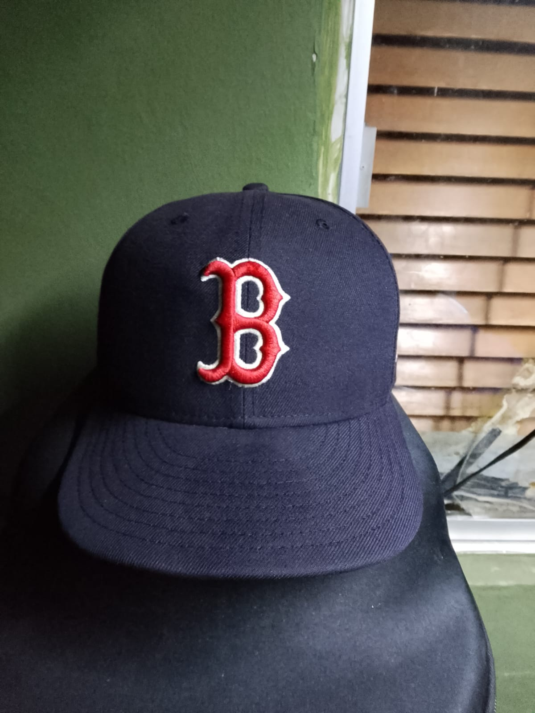

🧼
Lavado de gorra
Limpieza para mejorar la presentación de tu gorra y cuidar sus materiales.
Desde $50 MXNLavamos y damos horma a tus gorras para que luzcan limpias, cuidadas y con buena forma.

JR CAPS CLEAN · Cuidado especializado para tus gorras.
Un cuidado sencillo para mantener tus gorras limpias y con buena presentación.
Limpieza para mejorar la presentación de tu gorra y cuidar sus materiales.
Desde $50 MXNServicio para ayudar a recuperar y mantener la forma de tu gorra.
Consulta disponibilidadUn proceso sencillo para agendar tu servicio.
Contáctanos para consultar horarios y disponibilidad.
Lleva tu gorra para revisar el servicio que necesita.
Recíbela limpia y con una mejor presentación.
Fotos reales de gorras compartidas con JR CAPS CLEAN.
Calidad en la primera puesta. Comunícate para consultar horarios.
Agenda tu servicio con JR CAPS CLEAN.